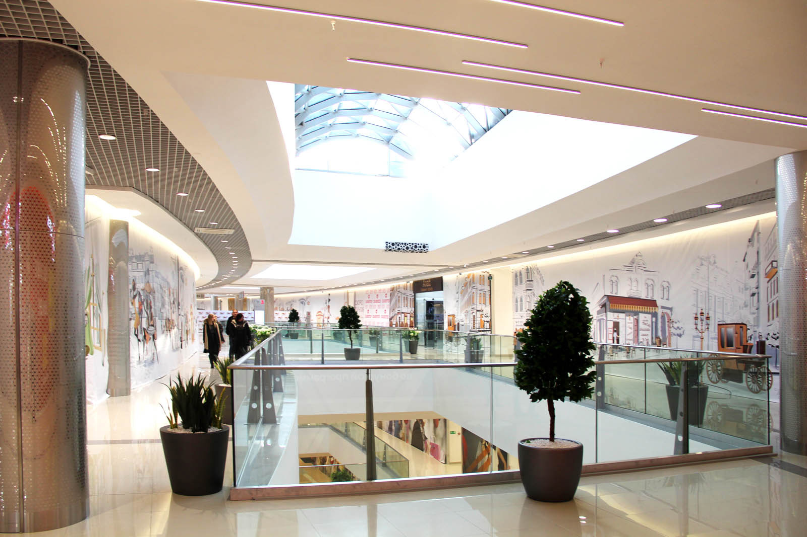
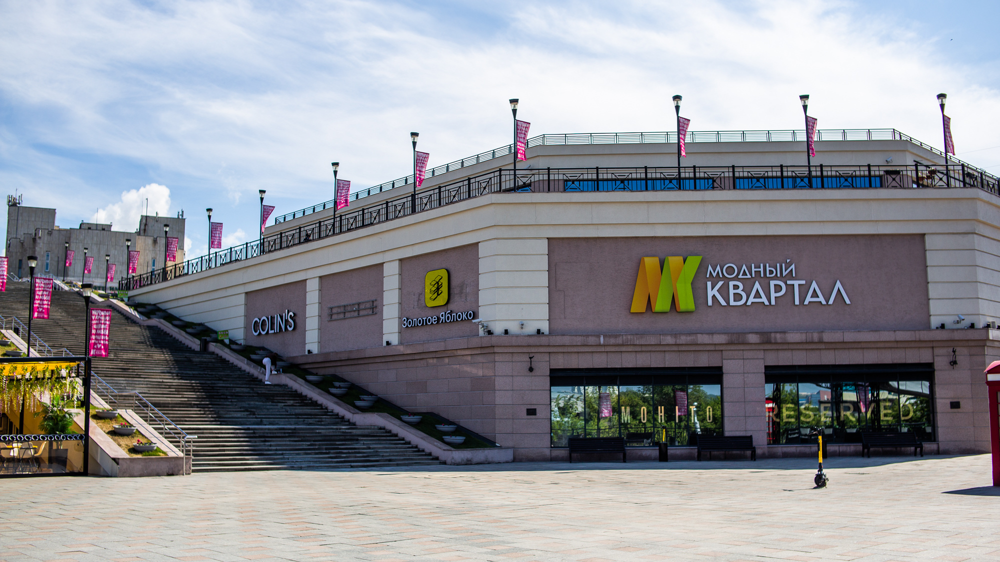
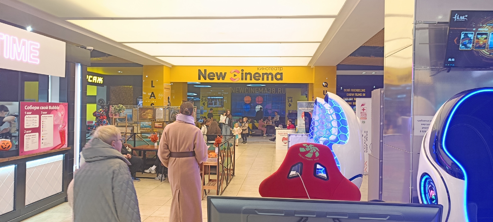

Моллы
Сильвер молл
«СИЛЬВЕРмолл» — крупнейший торгово-развлекательный центр Восточной Сибири открывает свои двери, приглашая всех желающих отдохнуть с комфортом.
Одним из ключевых достоинств ТРЦ «СИЛЬВЕРмолл» является его удобное расположение — рядом находится несколько остановок общественного транспорта. Спальные районы и торговые площади улицы Сергеева находятся в непосредственной близости от ТРЦ, так что добраться сюда можно легко и быстро из любой точки города — как на автомобиле (здесь есть большой подземный паркинг), так и на общественном транспорте.
На четырех этажах торгово-развлекательного комплекса и площади в 108, 6 кв.м. для гостей комплекса разместились:
- Большая галерея магазинов. Любители шопинга будут в восторге: «Детский мир» и «М.Видео», «Спортмастер» и «РивГош», H&M и «Глория Джинс» и многие другие магазины работают для вас без выходных и праздников.Только здесь вы найдете известные во всем мире бренды. А в гипермаркете «Лента» вы легко найдете нужные хозяйственные товары и продукты питания по низким ценам;
- Многофункциональная развлекательная зона. «СИЛЬВЕРмол» — это комплекс, в котором каждый найдет развлечение себе по душе. Можно отправиться всей семьей посмотреть очередной шедевр мирового кинематографа — для вас работают 13 кинозалов.Регулярно на территории торгово-развлекательного центра для детей и их родителей проводятся различные мероприятия — развлекательные и выставочные программы, мастер-классы и так далее;
- Рестораны быстрого питания и кафе. После (или во время) успешного шопинга часто хочется вкусно подкрепиться. В ТРЦ «СИЛЬВЕРмолл» для вас работают 14 кафе и бистро: в KFC, Wokker, Papa Johns, Subway вы сможете отведать вкусные гамбургеры, картошку фри, пиццу и многое другое. Голодными вы не останетесь
Местоположение:
ЯркоМолл
ТРЦ «ЯркоМолл» - современный торгово- развлекательный центр европейского уровня, общей площадью более 75 000 кв м.
Расположен на пересечении центральных улиц г. Иркутска и имеет высокую визуальную и транспортную доступность.
В ТРЦ Яркомолл представлены:
- Магазины, кафе и рестораны представителей более 300 компаний.
- 4 торговых уровня: торговые галереи, гипермаркет, кинотеатр, детский развлекательный центр, ресторанный дворик.
- Магазины бытовой техники и электроники М.Видео, Эльдорадо, магазин косметики и парфюмерии Л’Этуаль, магазин спортивных товаров Спортмастер, универмаги одежды Terranova, Modis, Sinsay, Gloria Jeans, Zolla, Fun Day, Ostin, магазин детских товаров Детский Мир, Гипермаркет О’кей, магазины ювелирных изделий Sokolov, Sunlight.
- Торгово- развлекательный Центр «ЯркоМолл» - это удобный качественный шоппинг, современное и удобное место встреч, событий, отдыха и общения. Высокая посещаемость в будни и выходные дни.
Местоположение:
Модный квартал
Торгово-развлекательный комплекс «Модный Квартал» в Иркутске — место комфортного шопинга и отдыха для каждого посетителя.
Говоря о достоинствах Модного Квартала стоит упомянуть:
- Удобное расположение. Здание находится в 130-м квартале города, в трёх минутах ходьбы от статуи Бабра.
- Красивый интерьер. На нижнем этаже есть фонтан с изображением Байкала, а сверху под крышей висит огромный ловец снов и блёстки в виде нерпочек, омуля и т. д.
- Разнообразие товаров. В комплексе есть всё: от продуктов и сувениров до современных кинотеатров, товаров для взрослых и детей на разный вкус и кошелёк.
- Хороший фуд-корт. Много разных кафе, где можно отдохнуть и перекусить. Фуд-корт оборудован электронными устройствами самообслуживания.
Местоположение
МТЦ Новый
МТЦ «Новый» – это многофункциональный торгово-досуговый центр Иркутска площадью более 62 тысяч квадратных метров. МТЦ «Новый» представляет собой трехуровневый комплекс с более чем 60 магазинами одежды, обуви и аксессуаров, а также современным мультиплексом и развлекательными площадками.
На территории торгово-досугового центра «Новый» находится множество бутиков одежды, обуви и аксессуаров самых популярных брендов
К тому же, в торгово-развлекательном центре расположены:
- Множество бутиков одежды, обуви и аксессуаров самых популярных брендов (Bazalini, Carl Vape, Cizaro, M.Testino, Flyboots, LundeNilona, Scarpe Stile, Gcfit, Designetforfitness, Escola, 38 Den» и др.) К тому же, в торгово-развлекательном центре расположены магазины спортивных товаров и одежды (Adidas и др.),
- Магазины мебели и товаров для дома (Askona и др.), фирменные магазины техники (Bork и др.), магазины подарков и аксессуаров («Экспедиция» и др.), популярные магазины детских товаров («Буду мамой» и др.), магазины парфюмерии и косметики («Л’Этуаль» и др.), ювелирные салоны («Ювелир», «Золотое Время», «Золото Якутии», «Алмаз» и др.), магазины часов и очков («Новое время», In Time и др.),
- туристическое агентство, салон оптики, салоны сотовой связи и мобильной техники («Связной», «Мегафон», Билайн» и др.), ювелирная мастерская, мастерская по ремонту обуви и часов «Мультимастер», ателье, книжный салон, цветочный магазин, зоомаркет, магазин канцелярских товаров, студия солярия, центр фотоуслуг, ателье, концертная касса, банкоматы («Альфа-Банк», «Сбербанк» и др.), магазин рыбалки «Боцман», магазины «Унция», «Свет и музыка», аптека, косметический салон «Fabrique» и платёжные терминалы.
Кроме того, в МТЦ «Новый» функционируют современный шестизальный кинотеатр «New cinemа», гиродром, детский развлекательный комплекс «Любо-Город», батутный комплекс и фитнес-клуб сети X-FIT
Также в торгово-досуговом комплексе для гостей находится «Ресторанный дворик», где расположено множество кафе и ресторанов быстрого питания (KFC, ресторан Sushi Studio, Итальянский ресторан «Перчини», I SCREAM ROLL и др.).